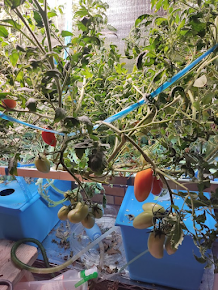
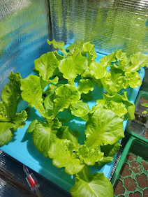
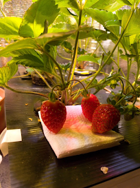
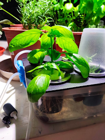

【簡介】
DWC又稱深水養殖系統，是水耕系統中最簡單&最容易DIY的系統之一
【目錄】
【介紹】
【實際種植照片】
【Q&A】
【介紹】
一、深水養殖(DWC)
最簡單&最容易上手的系統，為深水養殖最常見的方法，EX:水耕箱(桶)
1.定植籃: 固定水培介質的器具
2.水培介質: 用於固定植物根部，常見的有海棉、椰纖土、珍珠石、蛭石等
3.氣石&打氣機(非必要) : 打空氣到營養液中並產生水流，可讓根部更健康以及可避免根腐病等問題
4.水位線: 可以直接碰到定植籃或低於定植籃，取決於植物根長度
(1)當還是幼苗沒什麼根時，會建議直接讓水碰到定植籃
(2)當根系夠長後，建議可以降低水位到距離定植籃1~2公分，讓部分根露在空氣中，有助於提供根部更多氧氣
二、再循環深水養殖(RDWC)
為DWC的進階版本，在RDWC中，多個桶子或容器相互連接，使營養液在它們之間循環。可省去為每個 水耕箱單一維護的時間
三.筏系統
顧名思義，大面積商業種植最常用的系統之一，定植籃及介質固定在漂浮的筏(漂浮板)上，將筏(漂浮板) 放到巨大的水池中
【實際種植照片】
|  | |
| DWC水耕箱-蔥 | DWC水耕箱-番茄 |
|  | |
| DWC水耕箱-大陸妹 | 自製DWC水耕箱-高麗菜 |
|  |  |
| 自製DWC水耕箱-草莓 | 自製DWC水耕箱-蘿勒 |
【Q&A】
1.DWC一定要曝氣(裝打氣機)嗎?
不一定，沒有任何打氣或產生水流的系統又叫Kratky方法，部分植物在 Kratky方法中也可以長得很好不過由於沒有額外提供氧氣和水流，比較 容易得到根腐病等疾病
2.DWC的容器(水體)要多大?
水體(容器)越大，營養液須更換&調整的頻率會越低
容器(水體)要多大取決於您種植的植物類型以及其中種植的植物數量，通常小型蔬菜一顆2~5公升就足夠了，大型蔬果可能一
顆就要10~30公升
3.DWC的水位要多高
當還是幼苗沒什麼根時，會建議直接讓水碰到定植籃
當根系夠長後，建議可以降低水位到距離定植籃1~2公分，讓部分根露在空氣中，有助於提供根部更多氧氣